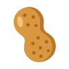

Top crop.
Peanuts, obviously.
Crop of Now · Est. 2026
Cream of
the crop.
Peanut butter, technically.
Crop of Now · Est. 2026
High
yield.
Returns may vary.
Crop of Now · Est. 2026
Shell
company.
Fully legitimate.
Crop of Now · Est. 2026
Deep
cover.
(about two inches down)
Field Operations · Crop of Now
Extra
crunchy.
Management has decided.
Crop of Now · Est. 2026